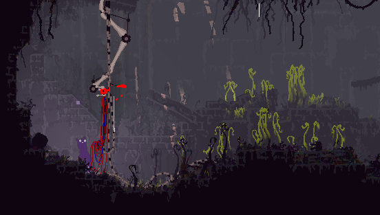

Custom iterators
To begin, please verify you have the mod correctly installed.
- Open the dev tools with "o" and change to the objects tab
- Change the "OBJECTS" window to the "Consumable" page
- Spawn a data pearl
- Change it from "misc" to "tomato". This may take a while of clicking as it's at the end of the list.
- If you see the pearl the mod it correctly installed and loaded.
Creating your custom iterator
To start, you need your own mod folder inside "
Create a new file in it and call it "oracle.json"
Paste in this starter template:
[
{
"id": "CustomOracle",
"roomId": "SU_C04",
"cornerPositions": [
{"x": 10, "y": 33},
{"x": 38, "y": 33},
{"x": 38, "y": 3},
{"x": 10, "y": 3}
]
}
]
Load up the game with the mod enabled and travel to the starter room for Monk and Survivor (SU_C04). Your new iterator will be located at the start of this room and look something like this:

Odds are your iterator will faceplant straight into the nearest wall. Outskits isn't a friendly place for iterators! At this point you'll want to build a nice iterator can. This mod also provides a template room (SU_ai) for you to get started and test your iterator. You will need to use the warp menu mod to get there.
Once you're in your AI room, open the dev tools and press the zero key. This allows you to respawn right back in the current room. Press "R" to reload the cycle and the mod will update to reflect changes you have made to your oracle.json file.
Customizing
RGB(A) values go from 0-255
HSL:
H (0-360) SL (0-100)
"body": {
"oracleColor": {
"r": 239, "g": 209, "b": 74
},
"gown": {
"color": {
"type": "gradient",
"from": {
"h": 270, "s": 108, "l": 108
},
"to": {
"h": 288, "s": 151, "l": 144
}
}
},
"sigil": null,
"eyes": {"r": 0, "g": 0, "b": 0, "a": 255}
}
The following components are also able to be recolored with RGB values:
- eyes
- torso
- neck
- head
- chin
- feet
Halos
Note that the base game iterators just use the shadows on the back wall, the rings are actually invisible. If you want it to look normal default option.
"body" : {
...
"halo": {
"innerRing": {"r": 255, "g": 0, "b": 0}
"outerRing": {"r": 0, "g": 255, "b": 0}
}
OR just use empty brackets for the default halo
"halo": {
}
Room Effects
Currently the only pearl style supported is pebbles.
swarmers will spawn neron flies.
...
"roomEffects" : {
"swarmers": 10,
"pearls": "pebbles"
}
Sigil
To provide a custom sigil you'll need to create a custom asset in the format rainworld expects it to be in.
This mod provides and example folder sprites. Copy this into the root of your mod and modify the image.
Change the file names of both files from "oracleCM" to "oracle[YOUR ORACLE ID]". Do the same in the text file so it points to the correct image file.
Use the file name in the sprite parameter as shown below.
"sigil": {
"sprite": "sunSigil",
"r": 255, "g": 0, "b": 0
}
Anger
This controls what score will trigger the oracleAnnoyed and oracleAngry events. You need to use events such as playerAttack to add/subtract from this score.
...
"annoyedScore": 10,
"angryScore": 0,